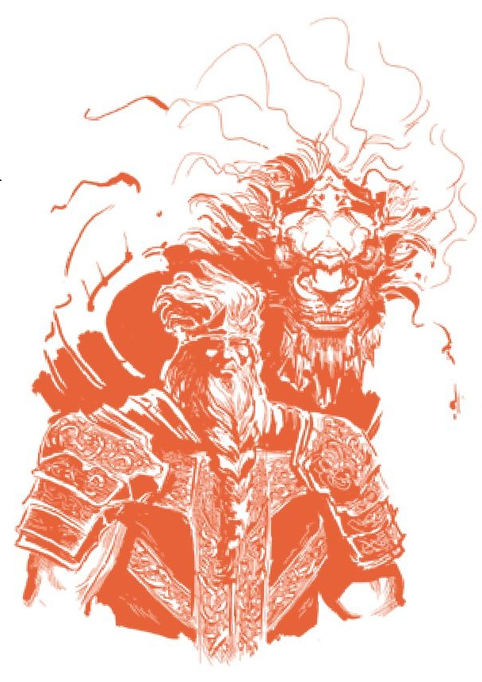

...fundamentalismo como erudição em tudo, menos no nome. É aqui que acho que muitas pessoas se confundem com o que percebem ser uma contradição entre erudição e fundamentalismo, já que muitos veem o último como fanáticos religiosos de linha dura que estão tão longe do intelectualismo quanto possível. De fato, os fundamentalistas podem ser um grupo de estudiosos que analisam e escrutinam as próprias fundações de seus princípios religiosos mais do que qualquer outro grupo, e assim eles se tornam ainda mais inflexíveis e não dispostos a dobrar no que veem como os contornos estritos de sua ordem.
Parte do desenvolvimento desta Ordem moderna seria a aceitação e integração de práticas baseadas em inteligência, um movimento liderado pelo próprio Radagon. Como Lorde Prístino, ele claramente teve tempo para ruminar sobre como a nova Ordem Dourada Sem Morte deveria ser governada, e ele misturou seu conhecimento da lua e da Térvore para fazer um novo todo.
Recorte a ilustração vermelha (figura em armadura) e salve como:
radagon_scholar_illustration.jpg
Esta é a pedra angular do fundamentalismo, como aprendemos no Selo da Ordem Dourada que escala com inteligência e fé. É um fato compartilhado pelos encantamentos da Ordem Dourada – todos eles são encantamentos desenvolvidos diretamente por Radagon e seu filho, Miquella, como podemos aprender nas descrições dos Anéis de Luz e do Disco de Luz de Radagon.
No entanto, quais são os dogmas desses fundamentalistas? E o que explica sua tendência a favorecer encantamentos que extraem de inteligência e fé? Tem a ver com as duas leis que formam a espinha dorsal das ideologias fundamentalistas: a Lei da Regressão e a Lei da Causalidade.
Agora, como um princípio, estes são baseados em conceitos matemáticos, o que eu acho interessante porque a matemática é referenciada no jogo em relação à Ordem Dourada. Especificamente, estou me referindo ao Arco de Polia e à Besta de Polia. Por exemplo, a descrição do Arco de Polia diz:
“Arco longo que utiliza uma série de polias e cordas. O mecanismo complexo, que exigia compreensão matemática e mecânica avançada para criar, foi provavelmente feito por um...”